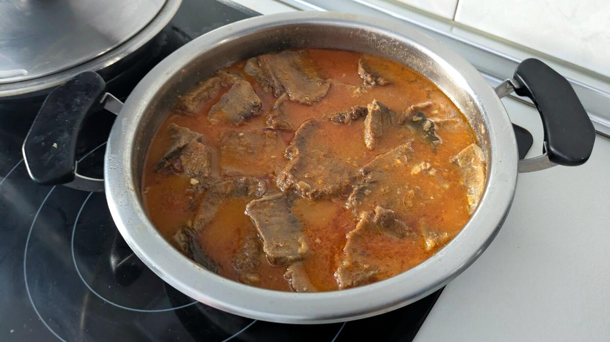
Versión editada para cocinar. Lo que ella escribió, palabra por palabra, está en «Cuaderno».
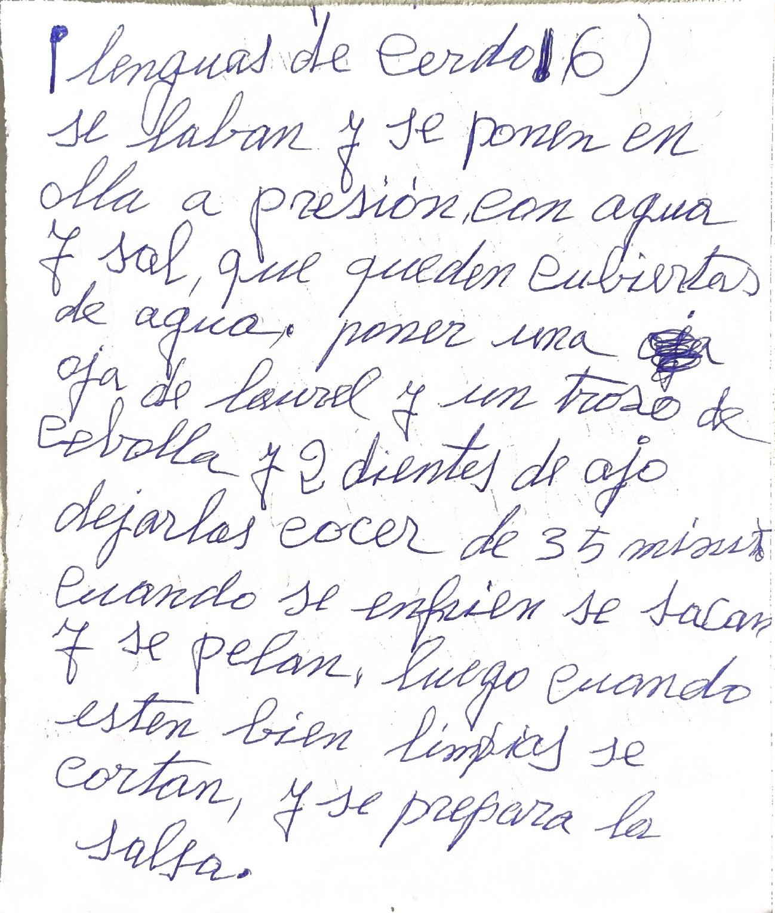
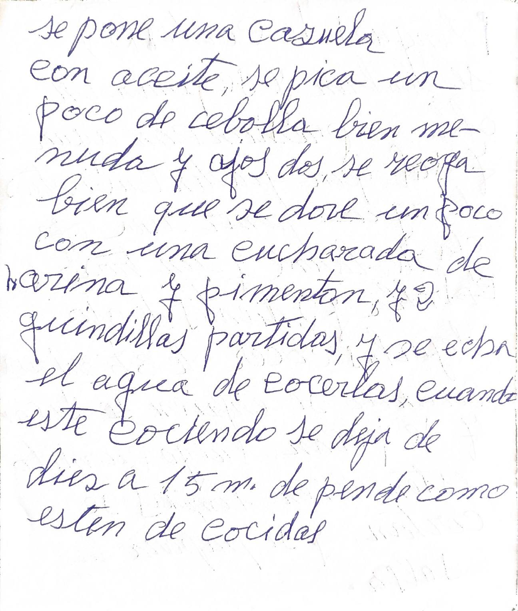
Transcripción fiel, con su ortografía. Lo que va entre corchetes son aclaraciones de la transcripción.
(lenguas de Cerdo (6)
se laban y se ponen en olla a presión, con agua y sal, que queden cubiertas de agua, poner una [palabra tachada] oja de laurel y un troso de cebolla y 2 dientes de ajo dejarlas cocer de 35 minut. cuando se enfrien se sacan y se pelan, luego cuando esten bien limpias se cortan, y se prepara la salsa.
se pone una cazuela con aceite, se pica un poco de cebolla bien menuda y ajos dos, se reoga bien que se dore un poco con una cucharada de harina y pimenton, y 2 guindillas partidas, y se echa el agua de cocerlas, cuando este cociendo se deja de dies a 15 m. de pende como esten de cocidas
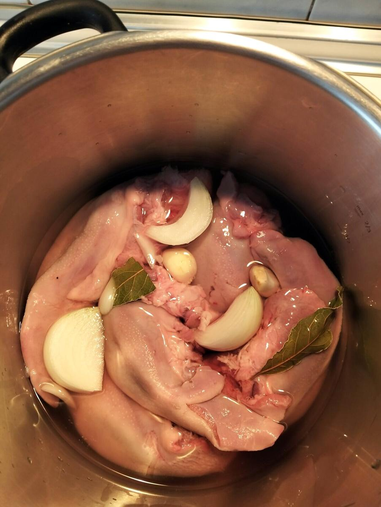
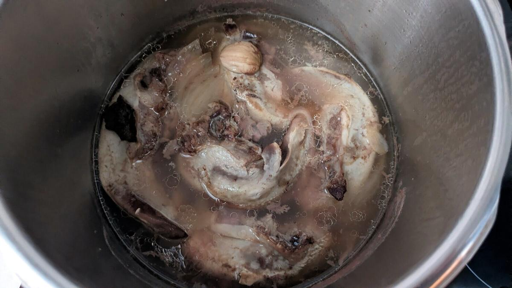
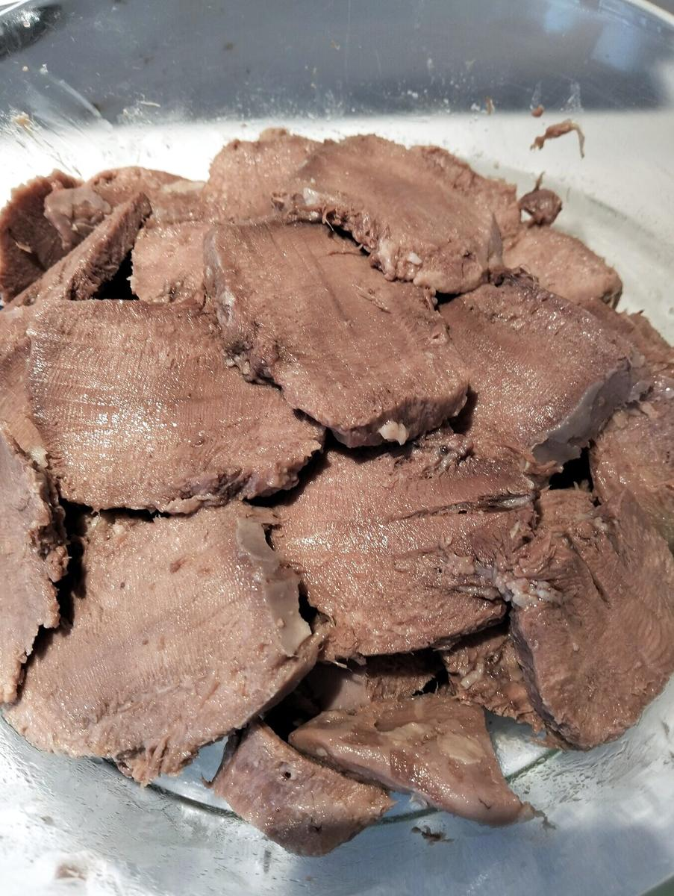
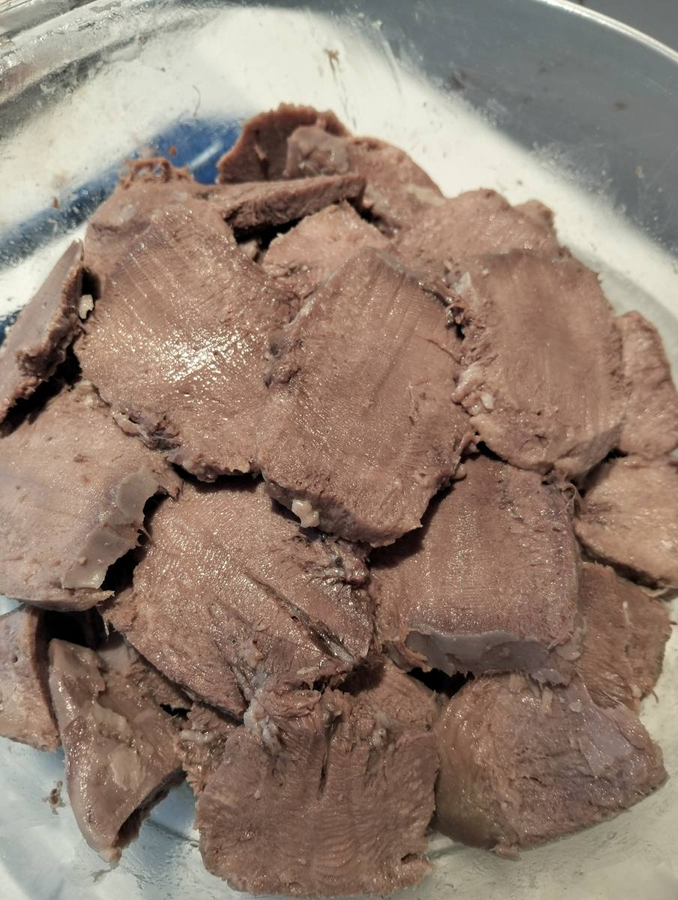
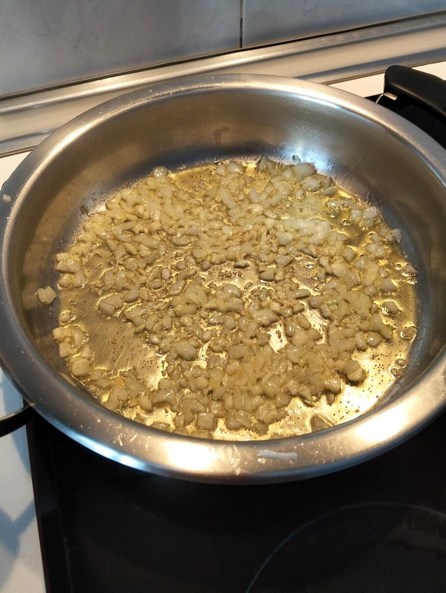
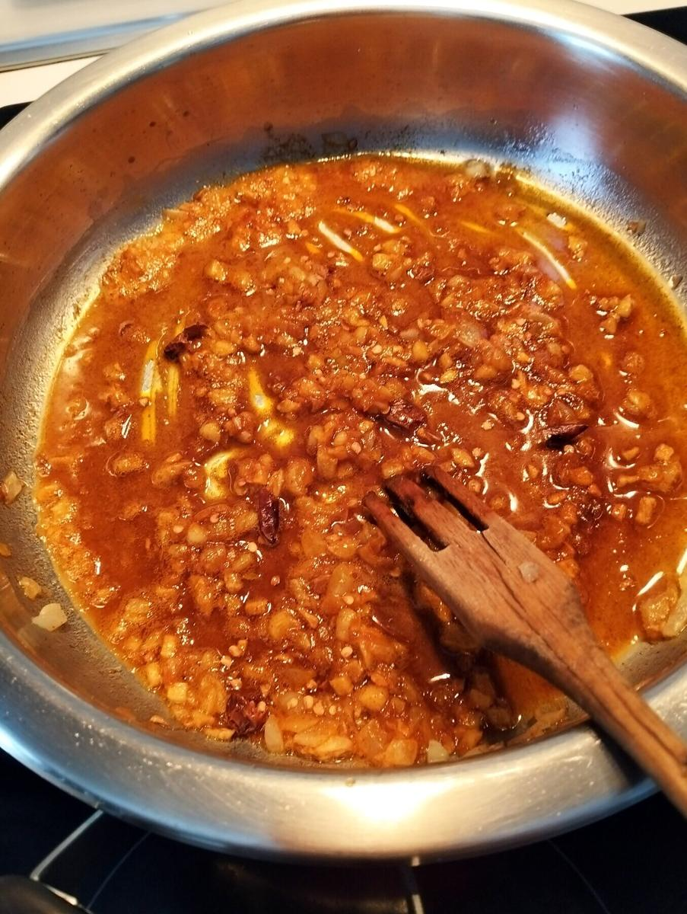
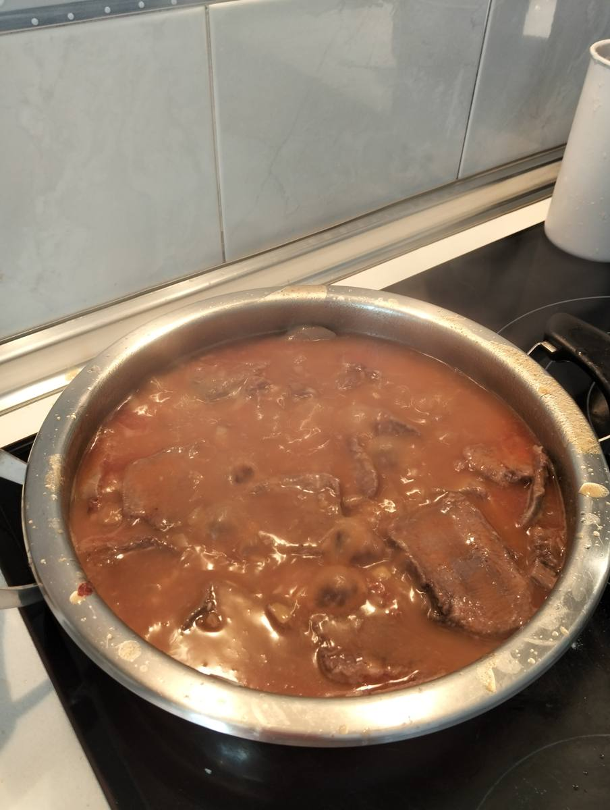
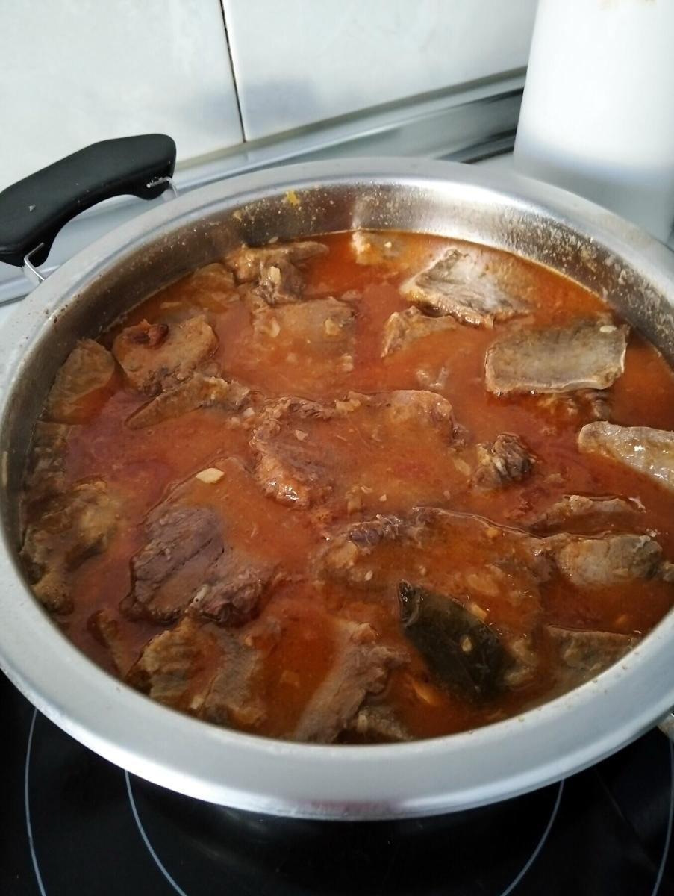